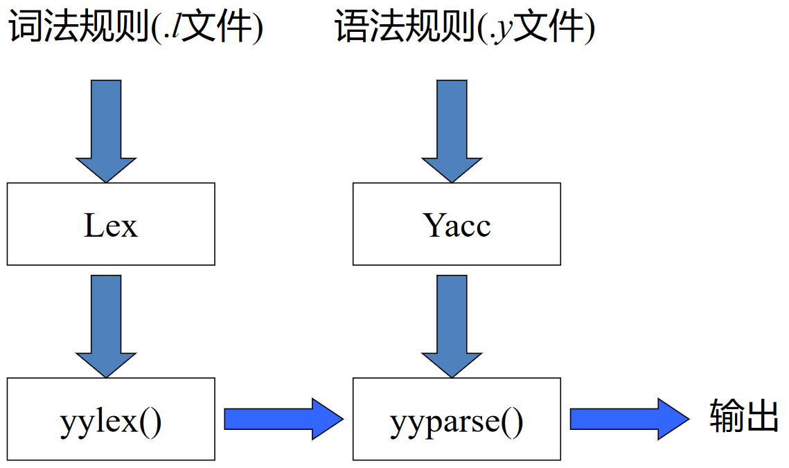

CFG 及语法分析概述¶
约 763 个字 23 行代码 预计阅读时间 3 分钟
语法分析器的生成器¶
在 词法分析 中，我们介绍过 Lex/Flex，它们是用来生成词法分析器的工具。类似的，Yacc/Bison 是用来生成语法分析器的工具
语法分析器的生成器 Yacc¶
Yacc: yet another compiler-compiler，是基于 LALR(1) 的语法分析器生成器，需要使用 BNF (Backus-Naur Form) 形式书写文法
Yacc 的 GNU 版叫做 Bison

Yacc 与 Lex 的联系如下：

Yacc 源程序的结构¶
Yacc 源程序分为三部分：
- 声明
- 放置 C 声明和对词法单元的声明
- 翻译规则
- 指明产生式及相关的语义动作
- 格式为
lhs : rhs { action }lhs是产生式左部，rhs是产生式右部，action是语义动作（在规约动作发生时执行）- 一个示例的语义动作是
$$ = $1 + $3;$$表示和产生式头相关的属性值（即规约的结果）$i表示产生式体中第 \(i\) 个文法符号的属性值
- 辅助性 C 语言例程
- 被直接拷贝到生成的 C 语言源程序中
- 可在语义动作中调用
- 包括
yylex()，这个函数返回词法单元，可以由 Lex 生成
Yacc 的使用
对于如下文法
\[
\begin{aligned}
exp &\rightarrow exp\ addop\ term\ |\ term \\
addop &\rightarrow +\ |\ - \\
term &\rightarrow term\ mulop\ factor\ |\ factor \\
mulop &\rightarrow * \\
factor &\rightarrow (\ exp\ )\ |\ number
\end{aligned}
\]
可以使用 Yacc 编写如下的源程序
%{
#include <stdio.h>
#include <ctype.h>
int yylex(void);
int yyerror (char * s);
%}
%token NUMBER
%%
command: exp {printf("%d\n", $1);};
exp: exp '+' term {$$ = $1 + $3;}
| exp '-' term {$$ = $1 - $3;}
| term {$$ = $1}
;
term: term '*' factor {$$ = $1 * $3;}
| factor {$$ = $1;}
;
factor: NUMBER {$$ = $1;}
| '(' exp ')' {$$ = $2;}
;
Yacc 文件格式中的几个问题¶
- 消除二义性：为算符指定优先级与结合律
- 冲突解决
- 归约/归约冲突：选择 Yacc 说明中先出现的产生式
- 移进/归约冲突：移近优先
更通用的方法：改写文法以消除冲突。例如, 消除二义性的同时也可能减少了冲突
语法分析小结¶
各种文法的表达能力¶

SLR 和 LR(1) 分析对比¶
| SLR(1) | LR(1) | ||
|---|---|---|---|
| 动作 | 移进 | $$ A \rightarrow \alpha \cdot a \beta \in I_i \\ \text{Goto}(I_i, a) = I_j \\ \text{Action}[i, a] = sj $$ | $$ A \rightarrow \alpha \cdot a \beta, b \in I_i \\ \text{Goto}(I_i, a) = I_j \\ \text{Action}[i, a] = sj $$ |
| 规约 | $$ A \rightarrow \alpha \cdot \in I_i \\ a \in \text{Follow}(A) \\ \text{Action}[i, a] = rj $$ | $$ A \rightarrow \alpha \cdot, a \in I_i \\ \text{Action}[i, a] = rj $$ | |
LL(1) 和 LR(1) 分析对比¶
| LR(1) 方法 | LL(1) 方法 | |
|---|---|---|
| 建立分析树 | 自底而上 | 自顶而下 |
| 归约 or 推导 | 规范归约（最右推导的逆） | 最左推导 |
| 分析表 | 状态×文法符号，大 | 非终结符×终结符，小 |
| 分析栈 | 状态栈，信息更多 | 文法符号栈（非递归实现） |
此外，尽管都要向前看一个符号，二者也有区别：
- LR(1)：在识别出整个 rhs 后，再往前看 1 个符号，然后确定使用哪条产生式归约 \(A \rightarrow \alpha, B \rightarrow \alpha\)
- LL(1)：向前看 1 个符号后根据 First, Follow（也就是预测分析表）来确定使用哪条产生式推导 \(A \rightarrow \alpha_1 | \alpha_2 | \alpha_3\)
LL(1), SLR和LR(1)对比¶

最后更新:
2024年6月23日 13:13:17
创建日期: 2024年4月23日 16:17:02
创建日期: 2024年4月23日 16:17:02